BlackMarbleR provides a simple and efficient way to retrieve and extract nighttime lights data from NASA’s Black Marble project. Black Marble is a NASA Earth Observatory project that provides a product suite of daily, monthly and yearly global nighttime lights. This package automates the process of downloading all relevant tiles from the NASA LAADS archive to cover a region of interest, converting the raw files (in HDF5 format), to georeferenced rasters, and mosaicing rasters together when needed.
Installation
The package can be installed via CRAN.
install.packages("blackmarbler")To install the development version from Github:
# install.packages("devtools")
devtools::install_github("worldbank/blackmarbler")Bearer Token
The function requires using a Bearer Token; to obtain a token, follow the below steps:
- Go to the NASA LAADS Archive
- Click “Login” (bottom on top right); create an account if needed.
- Click “See wget Download Command” (bottom near top, in the middle)
- After clicking, you will see text that can be used to download data. The “Bearer” token will be a long string in red.
After logging in, the below will show the bearer token in red instead of INSERT_DOWNLOAD_TOKEN_HERE. Sometimes, after logging in, the NASA website will redirect to another part of the website. To obtain the bearer token, just navigate to the NASA LAADS Archive after logging in.
Usage
Setup
Before downloading and extracting Black Marble data, we first load packages, define the NASA bearer token, and define a region of interest.
#### Setup
# Load packages
library(blackmarbler)
library(geodata)
library(sf)
library(raster)
library(ggplot2)
#### Define NASA bearer token
bearer <- "BEARER-TOKEN-HERE"
### ROI
# Define region of interest (roi). The roi must be (1) an sf polygon and (2)
# in the WGS84 (epsg:4326) coordinate reference system. Here, we use the
# getData function to load a polygon of Ghana
roi_sf <- gadm(country = "GHA", level=1, path = tempdir()) |> st_as_sf()Make raster of nighttime lights
The below example shows making daily, monthly, and annual rasters of nighttime lights for Ghana.
### Daily data: raster for February 5, 2021
r_20210205 <- bm_raster(roi_sf = roi_sf,
product_id = "VNP46A2",
date = "2021-02-05",
bearer = bearer)
### Monthly data: raster for October 2021
r_202110 <- bm_raster(roi_sf = roi_sf,
product_id = "VNP46A3",
date = "2021-10-01", # The day is ignored
bearer = bearer)
### Annual data: raster for 2021
r_2021 <- bm_raster(roi_sf = roi_sf,
product_id = "VNP46A4",
date = 2021,
bearer = bearer)Make raster stack of nighttime lights across multiple time periods
To extract data for multiple time periods, add multiple time periods to date. The function will return a raster stack, where each raster band corresponds to a different date. The below code provides examples getting data across multiple days, months, and years.
#### Daily data in March 2021
r_daily <- bm_raster(roi_sf = roi_sf,
product_id = "VNP46A3",
date = seq.Date(from = ymd("2021-03-01"), to = ymd("2021-03-31"), by = "day"),
bearer = bearer)
#### Monthly aggregated data in 2021 and 2022
r_monthly <- bm_raster(roi_sf = roi_sf,
product_id = "VNP46A3",
date = seq.Date(from = ymd("2021-01-01"), to = ymd("2022-12-01"), by = "month"),
bearer = bearer)
#### Yearly aggregated data in 2012 and 2021
r_annual <- bm_raster(roi_sf = roi_sf,
product_id = "VNP46A4",
date = 2012:2021,
bearer = bearer)Map of nighttime lights
Using one of the rasters, we can make a map of nighttime lights
#### Make raster
r <- bm_raster(roi_sf = roi_sf,
product_id = "VNP46A3",
date = "2021-10-01",
bearer = bearer)
#### Prep data
r <- r |> mask(roi_sf)
r_df <- rasterToPoints(r, spatial = TRUE) |> as.data.frame()
names(r_df) <- c("value", "x", "y")
## Remove very low values of NTL; can be considered noise
r_df$value[r_df$value <= 2] <- 0
## Distribution is skewed, so log
r_df$value_adj <- log(r_df$value+1)
##### Map
p <- ggplot() +
geom_raster(data = r_df,
aes(x = x, y = y,
fill = value_adj)) +
scale_fill_gradient2(low = "black",
mid = "yellow",
high = "red",
midpoint = 4.5) +
labs(title = "Nighttime Lights: October 2021") +
coord_quickmap() +
theme_void() +
theme(plot.title = element_text(face = "bold", hjust = 0.5),
legend.position = "none")
Trends over time
We can use the bm_extract function to observe changes in nighttime lights over time. The bm_extract function leverages the exactextractr package to aggregate nighttime lights data to polygons. Below we show trends in annual nighttime lights data across Ghana’s first administrative divisions.
#### Extract annual data
ntl_df <- bm_extract(roi_sf = roi_sf,
product_id = "VNP46A4",
date = 2012:2022,
bearer = bearer)
#### Trends over time
ntl_df |>
ggplot() +
geom_col(aes(x = date,
y = ntl_mean),
fill = "darkorange") +
facet_wrap(~NAME_1) +
labs(x = NULL,
y = "NTL Luminosity",
title = "Ghana Admin Level 1: Annual Average Nighttime Lights") +
scale_x_continuous(labels = seq(2012, 2022, 4),
breaks = seq(2012, 2022, 4)) +
theme_minimal() +
theme(strip.text = element_text(face = "bold"))
Workflow to update data
Some users may want to monitor near-real-time changes in nighttime lights. For example, daily Black Marble nighttime lights data is updated regularly, where data is available roughly on a week delay; same use cases may require examining trends in daily nighttime lights data as new data becomes available. Below shows example code that could be regularly run to produce an updated daily dataset of nighttime lights.
The below code produces a dataframe of nighttime lights for each date, where average nighttime lights for Ghana’s 1st administrative division is produced. The code will check whether data has already been downloaded/extracted for a specific date, and only download/extract new data.
# Create directories to store data
dir.create(file.path(getwd(), "bm_files"))
dir.create(file.path(getwd(), "bm_files", "daily"))
# Extract daily-level nighttime lights data for Ghana's first administrative divisions.
# Save a separate dataset for each date in the `"~/Desktop/bm_files/daily"` directory.
# The code extracts data from January 1, 2023 to today. Given that daily nighttime lights
# data is produced on roughly a week delay, the function will only extract data that exists;
# it will skip extracting data for dates where data has not yet been produced by NASA Black Marble.
bm_extract(roi_sf = roi_sf,
product_id = "VNP46A2",
date = seq.Date(from = ymd("2023-01-01"), to = Sys.Date(), by = 1),
bearer = bearer,
output_location_type = "file",
file_dir = file.path(getwd(), "bm_files", "daily"))
# Append daily-level datasets into one file
file.path(getwd(), "bm_files", "daily") |>
list.files(pattern = "*.Rds",
full.names = T) |>
map_df(readRDS) |>
saveRDS(file.path(getwd(), "bm_files", "ntl_daily.Rds"))Functions and arguments
Functions
The package provides two functions.
-
bm_rasterproduces a raster of Black Marble nighttime lights. -
bm_extractproduces a dataframe of aggregated nighttime lights to a region of interest (e.g., average nighttime lights within US States).
Both functions take the following arguments:
Required arguments
roi_sf: Region of interest; sf polygon. Must be in the WGS 84 (epsg:4326) coordinate reference system. For
bm_extract, aggregates nighttime lights within each polygon ofroi_sf.-
product_id: One of the following:
-
"VNP46A1": Daily (raw) -
"VNP46A2": Daily (corrected) -
"VNP46A3": Monthly -
"VNP46A4": Annual
-
-
date: Date of raster data. Entering one date will produce a raster. Entering multiple dates will produce a raster stack.
- For
product_ids"VNP46A1"and"VNP46A2", a date (eg,"2021-10-03"). - For
product_id"VNP46A3", a date or year-month (e.g.,"2021-10-01", where the day will be ignored, or"2021-10"). - For
product_id"VNP46A4", year or date (e.g.,"2021-10-01", where the month and day will be ignored, or2021).
- For
bearer: NASA bearer token. For instructions on how to create a token, see here.
Optional arguments
-
variable: Variable to used to create raster (default:
NULL). For information on all variable choices, see here; forVNP46A1, see Table 3; forVNP46A2see Table 6; forVNP46A3andVNP46A4, see Table 9. IfNULL, uses the following default variables:- For
product_id"VNP46A1", usesDNB_At_Sensor_Radiance_500m. - For
product_id"VNP46A2", usesGap_Filled_DNB_BRDF-Corrected_NTL. - For
product_ids"VNP46A3"and"VNP46A4", usesNearNadir_Composite_Snow_Free.
- For
-
quality_flag_rm: Quality flag values to use to set values to
NA. Each pixel has a quality flag value, where low quality values can be removed. Values are set toNAfor each value in therquality_flag_rmvector. (Default:c(255)).- For
VNP46A1andVNP46A2(daily data):-
0: High-quality, Persistent nighttime lights -
1: High-quality, Ephemeral nighttime Lights -
2: Poor-quality, Outlier, potential cloud contamination, or other issues -
255: No retrieval, Fill value (masked out on ingestion)
-
- For
VNP46A3andVNP46A4(monthly and annual data):-
0: Good-quality, The number of observations used for the composite is larger than 3 -
1: Poor-quality, The number of observations used for the composite is less than or equal to 3 -
2: Gap filled NTL based on historical data -
255: Fill value
-
- For
check_all_tiles_exist: Check whether all Black Marble nighttime light tiles exist for the region of interest. Sometimes not all tiles are available, so the full region of interest may not be covered. If
TRUE, skips cases where not all tiles are available. (Default:TRUE).interpol_na: When data for more than one date is downloaded, whether to interpolate
NAvalues in rasters using theraster::approxNAfunction. Additional arguments for theraster::approxNAfunction can also be passed intobm_raster/bm_extract(eg,method,rule,f,ties,z,NA_rule). (Default:FALSE).-
output_location_type: Where output should be stored (default:
r_memory). Either:-
r_memorywhere the function will return an output in R -
filewhere the function will export the data as a file. Forbm_raster, a.tiffile will be saved; forbm_extract, a.Rdsfile will be saved. A file is saved for each date. Consequently, ifdate = c(2018, 2019, 2020), three datasets will be saved: one for each year. Saving a dataset for each date can facilitate re-running the function later and only downloading data for dates where data have not been downloaded.
-
If output_location_type = "file", the following arguments can be used:
file_dir: The directory where data should be exported (default:
NULL, so the working directory will be used)file_prefix: Prefix to add to the file to be saved. The file will be saved as the following:
[file_prefix][product_id]_t[date].[tif/Rds]file_skip_if_exists: Whether the function should first check wither the file already exists, and to skip downloading or extracting data if the data for that date if the file already exists (default:
TRUE). If the function is first run withdate = c(2018, 2019, 2020), then is later run withdate = c(2018, 2019, 2020, 2021), the function will only download/extract data for 2021. Skipping existing files can facilitate re-running the function at a later date to download only more recent data.…: Additional arguments for
raster::approxNA, ifinterpol_na = TRUE
Argument for bm_extract only
-
aggregation_fun: A vector of functions to aggregate data (default:
"mean"). Theexact_extractfunction from theexactextractrpackage is used for aggregations; this parameter is passed tofunargument inexactextractr::exact_extract. -
add_n_pixels: Whether to add a variable indicating the number of nighttime light pixels used to compute nighttime lights statistics (eg, number of pixels used to compute average of nighttime lights). When
TRUE, it adds three values:n_non_na_pixels(the number of non-NApixels used for computing nighttime light statistics);n_pixels(the total number of pixels); andprop_non_na_pixelsthe proportion of the two. (Default:TRUE).